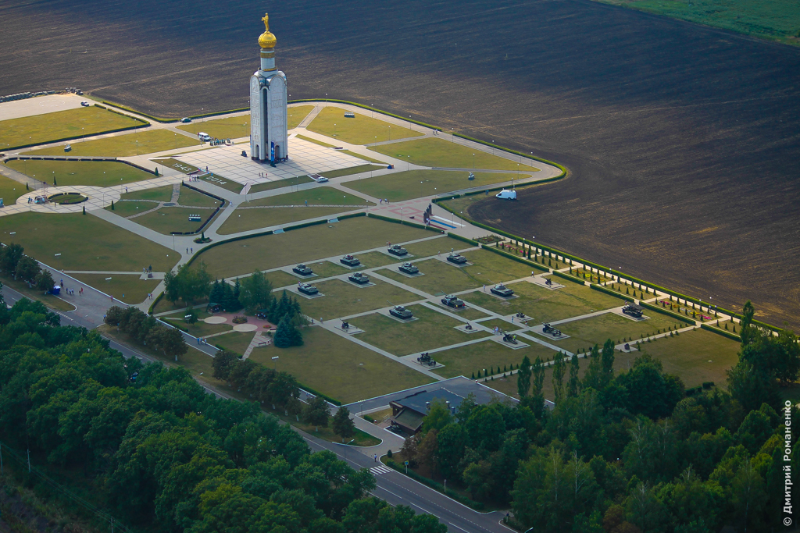
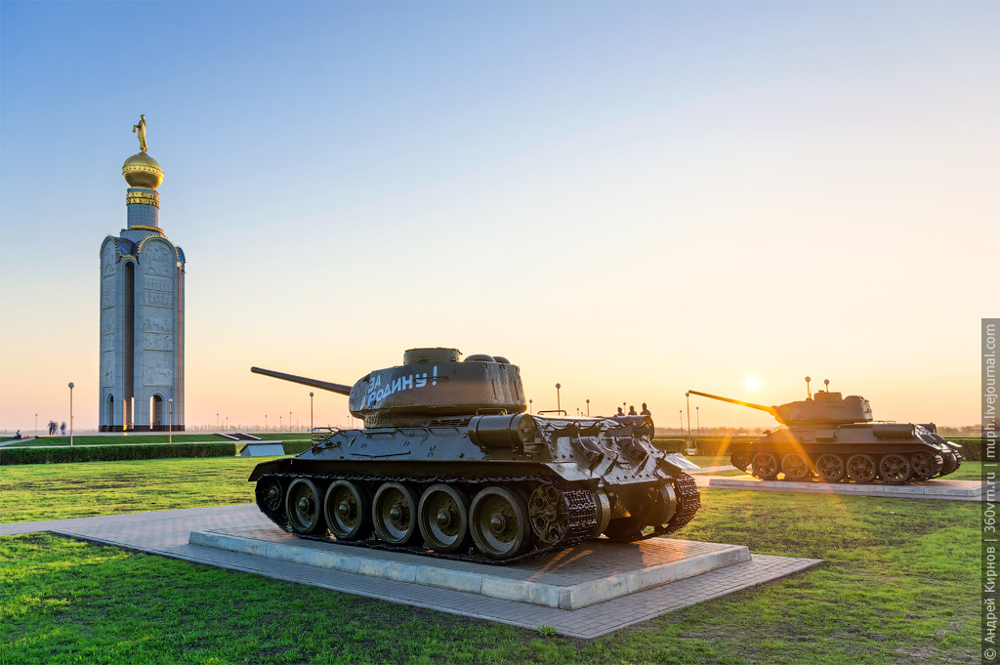
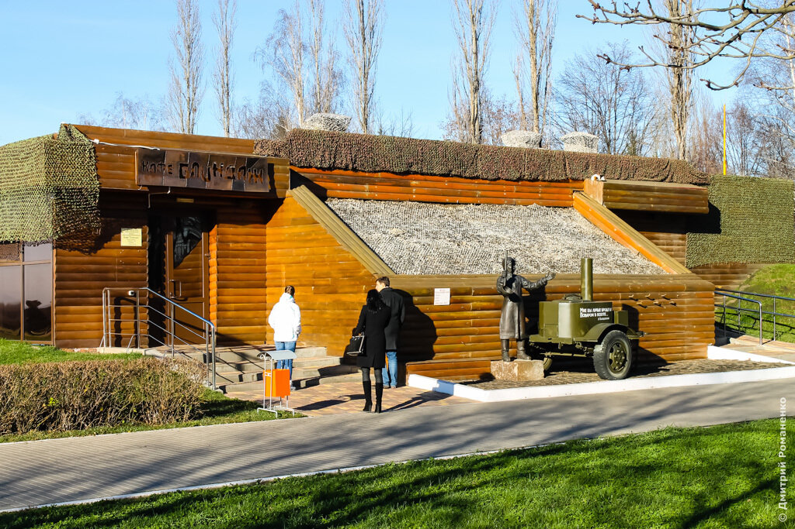

Музей-заповедник «Прохоровское поле»
- Режим работы: С 10:00 до 18:00, в пятницу до 20:00;
понедельник - выходной - Стоимость услуг: ознакомьтесь с перечнем услуг на официальном сайте
- Местоположение: 2MCH+MJ Прохоровка, Белгородская обл.
Государственный военно-исторический музей-заповедник «Прохоровское поле» создан для увековечения памяти погибших при защите Отечества в битве на Курской дуге и посвящен крупнейшему танковому сражению Великой Отечественной войны. Указ о его создании был подписан Президентом РФ Б.Н. Ельциным 26 апреля 1995 года.  В сражении под Прохоровкой 12 июля 1943 года участвовали 1200 танков и самоходных орудий. К 50-летию Великой Победы на Третьем ратном поле России была воздвигнута 59-метровая Звонница с колоколом весом 3,5 тонны. Рядом с ней представлена выставка бронетехники времен Великой Отечественной войны.  Одним из самых уютных уголков Прохоровского поля по праву считается кафе «Блиндаж». Его внешний вид и внутреннее убранство стилизовано под блиндаж — бревенчатые стены, столы и стулья сколочены из натурального дерева. У входа в кафе установлена скульптурная композиция «Кашевар и полевая кухня».  Масштаб Музея-заповедника захватывает, а дизайн его объектов никого не оставляет равнодушным. Он расположен в том уникальном месте, которое уже много лет является подлинным святилищем, куда каждый год едут и идут многочисленные гости, чтобы почтить память погибших, вспомнить о ратных подвигах предков. Посетив музей-заповедник «Прохоровское поле», можно узнать не только много интересного из истории России и Белгородчины, но прекрасно отдохнуть и провести время.